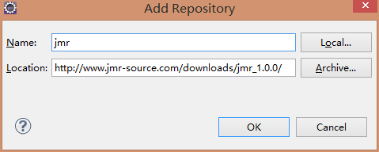
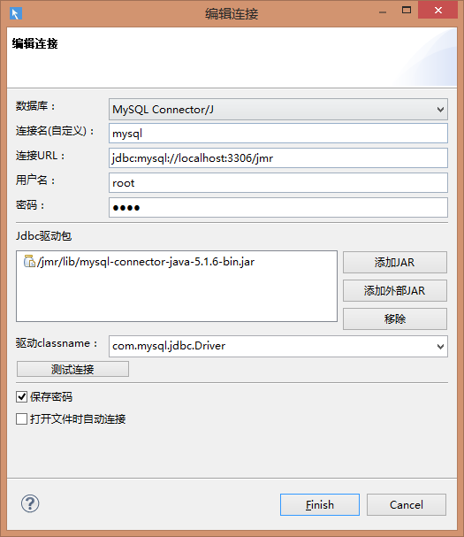
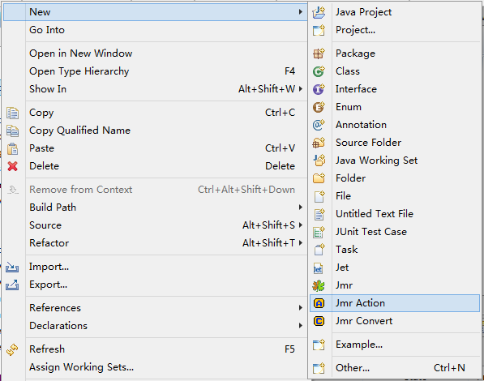
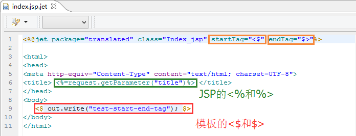
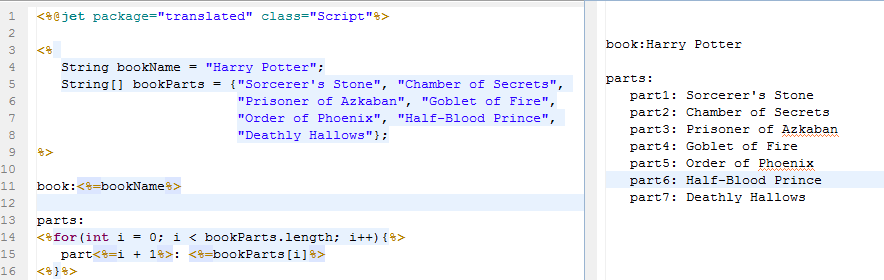
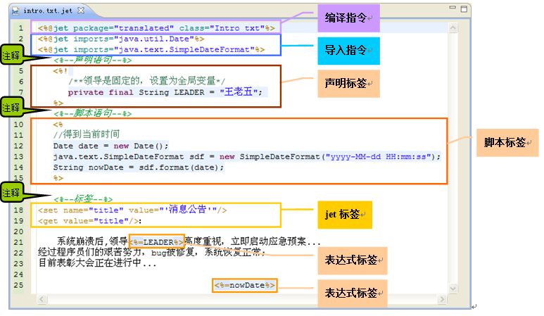
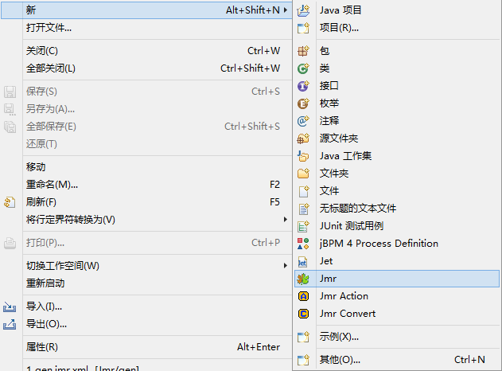

1.1 Jmr 安装
ダウンロードアドレス Jmrダウンロードアドレス：http://www.jmr-source.com/downloads/jmr_1.0.0/site.xml オペレーティングシステム 現時点ではWindowsのみ対応していますが、今後のバージョンでは順次M...に対応する予定です。

1.2 Jmr 快速体验
Jmr クイック体験 2つの例を通してJmrを手軽に体験します。 Hello Jmr! 以下は簡単な生成例で、まとめると3ステップだけです： 1、テンプレートを作成 2、タスクを設定...

3.0 Jmr 模型
データベース データベースのテーブルとビューから変換されたモデルです。 モデル適用のフロー データベース接続を設定すれば、Jdbcドライバーパッケージを提供しているデータベースはすべて使用できます。 ...

2.4 Jet Action
JmrはユーザーがActionをカスタマイズすることを許可します。Action内で変数をカスタマイズし、テンプレートに渡すことができます。 この利点は、Actionが変数の取得を担当し、テンプレートはActionから渡された変数を...

2.3 Jet 組み込みオブジェクト
Jet組み込みオブジェクトは、各テンプレートに提供されるJavaオブジェクトであり、開発者は明示的に宣言することなく直接使用できます。 Jetには2つの組み込みオブジェクトがあります： out：<% %>内でオブジェクトを出力します...

2.2 Jet 指令
Jetディレクティブは、テンプレートページ全体に関連する属性を設定するために使用されます。例えば、コンパイルディレクティブやインポートディレクティブなどです。 コンパイルディレクティブ テンプレートファイルの先頭行には必ずコンパイルディレクティブがあります。JetテンプレートはJavaクラスにコンパイルされます。原理は...

2.1 Jet 语法
この節では、Jet開発における基本構文を簡単に紹介します。 スクリプト スクリプトプログラムは、スクリプト言語で有効である限り、任意の量のJavaステートメント、変数、メソッド、または式を含むことができます...

2.0 Jet 模板
JetはJSP構文に似たテンプレート言語であり、PHPやASPにも似ています。これはEclipseモデリングのサブプロジェクトです。 JetはJava言語をスクリプト言語として使用し、Jetファイルの拡張子は(*.j...)

1.3 Hello Jmr
Hello Jmrの例を通して、Jmrの操作手順を理解します。 Jmrファイルの作成 Eclipseで、ファイルを作成したい場所で右クリックするか、メニュー->ファイル(file)を選択します。...
1.0 Jmr 使用教程
Jmr 紹介 Jmrの正式名称はJet Model Robotizationで、モデル駆動開発に基づき、自分のプロジェクトやフレームワークに合わせてテンプレートを作成し、コードを生成するツールです。 JmrはJetテンプレートを使用してコードを生成し...